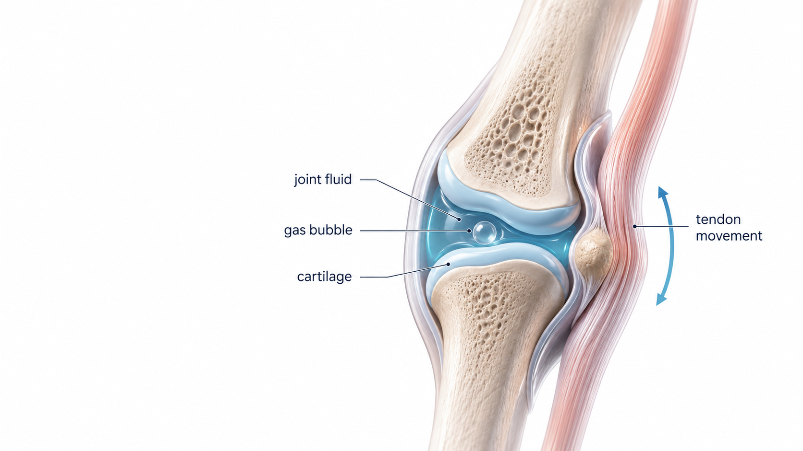

Featured Article
How Long Does It Take for a Bone to Heal?
Most patients want a clear timeline. This article explains the general phases of fracture healing, why x-rays matter, and why healing speed varies from person to person.

Clear, practical orthopedic answers from Dr. James Barnes for patients who want to understand bones, joints, injuries, imaging, arthritis, recovery, and when it makes sense to be evaluated.
Most patients want a clear timeline. This article explains the general phases of fracture healing, why x-rays matter, and why healing speed varies from person to person.
Each article is written to answer the common question first, then explain what symptoms matter and when an orthopedic evaluation may help.
Learn the general timeline for fracture healing and what can make recovery faster or slower.

Learn why joints pop, crack, click, or snap — and when the sound should be checked.

A simple answer to one of the most common hand and joint questions.
Bring your question to your visit, or start with the page that matches your symptoms.